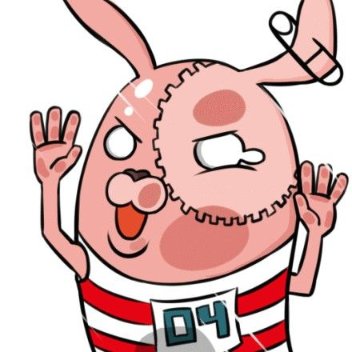

元素居中
尝试一下
水平居中
margin:auto
实现方法：设置块级元素左右外边距为auto。
<div style="margin-left: auto; margin-right: auto;">margin:auto</div>
- 该方法必须先给块级元素设置宽度，否则，因为块级元素宽度默认为一整行，相对父级元素居中相当于不做任何操作。
- 这种方法只能设置水平居中，即使给上下外边距设置为auto，块级元素也无法垂直居中
inline-block
实现方法：添加一个父级元素并设置文字居中对齐，设置子元素为inline-block
<div style="text-align: center">
<div style="display: inline-block;">inline-block</div>
</div>
- 可以设置多个子元素，子元素在同一行相对父元素居中
float
实现方法：添加一个父级元素并设置相对对位，左浮动，左偏移为50%，设置子元素相对定位，左浮动，右偏移为50%
<div style="position: relative; float: left; left: 50%;">
<div style="position: relative; float: left; right: 50%;">float</div>
</div>
- 块级元素设置浮动后，其宽度由内部内容撑开，因此不需要为父子元素设置宽度。
- 可以设置多个子元素，子元素在同一行相对父元素居中
absoulte
实现方法：添加父级元素并设置为相对定位，设置子级元素绝对定位，左偏移为50%，然后
- 知道块级元素宽度的情况下，设置左外边距为负的宽度的一半
- 不知道块级元素宽度的情况下，设置 CSS3 新增的 transform为translateX(-50%)
<div style="position: relative;">
<div style="position: absolute; left: 50%; margin-left: -50px;">absoulte</div>
<div style="position: absolute; left: 50%; transform: translateX(-50%);">css3</div>
</div>
flex
实现方法：添加父级元素并设置为 flex ，再设置 justify-content 为 center。
<div style="display: flex; justify-content: center;">
<div>flex</div>
</div>
table
实现方法：
- 对于 IE6、IE7 ，将块级元素包裹在表格内，再为表格设置 text-align为center
- 对于 IE8+ 和其他主流浏览器，将块级元素包裹在表格内，再为 table 设置 algin 为 center
<!-- IE6、IE7 -->
<table>
<tr>
<td style="text-align: center;">
<div>table</div>
</td>
</tr>
</table>
<!-- IE8+ -->
<table align="center">
<tr>
<td>
<div>table</div>
</td>
</tr>
</table>
垂直居中
absoulte
实现方法：添加父级元素为相对定位，然后
- 知道块级元素高度的情况下（假设为 50 px），设置上偏移 50%，再设置上外边距为负的高度的一半
- 知道块级元素高度的情况下（假设为 50 px），设置上下偏移为 0，再设置上下外边距为自动
- 不知道块级元素高度的情况下，设置上偏移 50%，再设置 CSS3 新增的 transform 为 translateY(-50%)
<div style="height: 100%; position: relative;">
<div style="position: absolute; height: 50px; top: 50%; margin-top: -25px;">absoulte</div>
<div style="position: absolute; height: 50px; top: 0; bottom: 0; margin-top: auto; margin-bottom: auto">ltrb</div>
<div style="position: absolute; top: 50%; transform: translateY(-50%);">css3</div>
</div>
flex
实现方法：添加父级元素并设置为 flex ，再设置 align-items 为 center。
<div style="height: 100%; display: flex; align-items: center;">
<div >flex</div>
</div>
line-height
实现方法：为元素添加与块级元素高度（假设为 100 px）相同的 line-height。
<div style="height: 100px; line-height: 100px;">
line-height
</div>
line-height 只适用于使单行文本垂直居中。
vertical-align
CSS 有一个属性 vertical-align 用于垂直对齐方式，然而并不是添加该属性后所有东西都会对齐，它对块内的行内（inline）元素或表格单元（table-cell）元素起作用，并且是相对于当前行，而不是整个父元素。
参照文字
<div class="show" style="height: 100px;line-height: 100px;font-size: 10px; vertical-align: middle;">
参照文字<img src="../images/putin.jpg" style="height: 10px;">
</div>
参考文献
[1] 大漠 六种实现元素水平居中 https://www.w3cplus.com/css/elements-horizontally-center-with-css.html